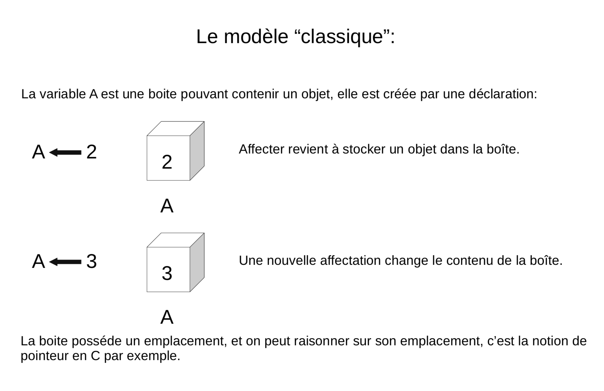
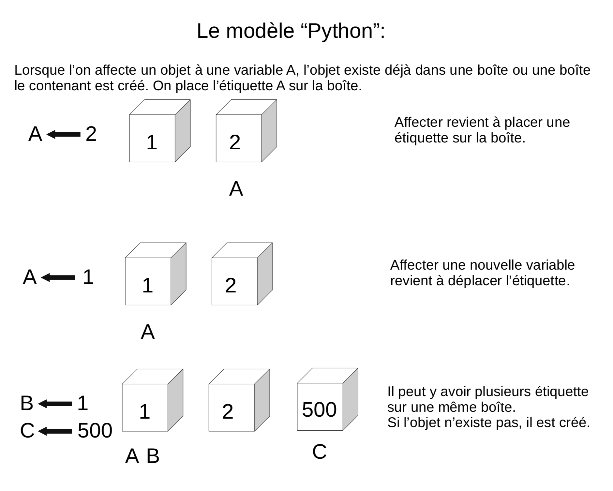

"Je suis une chaîne !"
'Moi aussi'
"""Et moi !"""Algorithme et programmation en Python au lycée, deuxième partie
Le langage Python

Les types
Les types simples
Il y a 3 types au programme: entier, flottant et chaîne de caractères. En Python, ils vont correspondre au type int (integer), float, str (string).
Pas de type caractère en Python, uniquement un type chaîne de caractères. (
Plusieurs syntaxe pour les chaines de caractères:
'Cela qui permet, cela: "'Il existe aussi un type booléen qui ne contient que les valeurs True et
False dont il ne semble pas nécessaire de parler aux élèves.
La fonction type
La fonction type() renvoie le type d’une donnée:
>>> type("p")
<class 'str'>
>>> type(2)
<class 'int'>
>>> type("2")
<class 'str'>
>>> type(2.0)
<class 'float'>Conversion
Il existe plusieurs fonctions qui permettent de forcer le type d’une variable en un autre type.
>>> int("3")
3
>>> int(3.14)
3>>> a = "2"
>>> b = float(a)
>>> type(b)
<class 'float'>Les types composées
Il existe en Python des types composées de plusieurs types, tels que les tuples et les listes.
Ces types ne sont pas au programme, mais ils sont omniprésents en Python
Tuple
Un tuple correspond en fait à ce que nous appellerions un \(n\)-uplet, il s’écrit: \((elem1, elem2, ...)\)
>>> type((4,5,7,-2))
<class 'tuple'>
>>> type((3,"toto"))
<class 'tuple'>Les parenthèses sont optionnelles:
>>> 3, 4
(3, 4)Les tuples ne sont pas mutables. (Nous verrons plus loin ce que cela veut dire.)
L’affectation
La syntaxe pour l’affectation en Python est: =
>>> a = 5Python est un langage dont le typage est dynamique. Cela signifie que c’est l’ordinateur, et non pas le programmeur, qui se charge de «typer» les variables.
La déclaration est implicite lors de l’affectation.
>>> a = 3
>>> type(a)
<class 'int'>
>>> a = "toto"
>>> type(a)
<class 'str'>Attention confusion
Le fait que l’affectation se note = est une source infinie de confusion !
Il y a un travail important à fournir pour distinguer = en Python du = mathématiques.
En particulier, il ne faut jamais prononcer le = en Python «égal». On parle d’affectation, on dit qu’on stocke la donnée dans la variable, etc.
A l’écrit/en pseudo-code, il faut bien insister sur le fait que l’affectation se note \(\longleftarrow\)
(Il est possible que l’on retrouve cette flèche au bac cette année )
Nom de variable
Le nom de la variable est une suite de lettres (minuscules ou majuscules, pas d’accents) et de chiffres, qui doit toujours commencer par une lettre, et qui ne contient pas de caractères spéciaux en dehors de l’underscore _
Attention les élèves mettent des espaces dans les noms de variables
Bien nommer
Bien nommer les variables fait plaisir à Camus (Albert..) et aux profs d’I.S.N
Et peut être qu’un jour, nommer ses variables comme un mathématicien ne sera plus une insulte !
Le modèle des boîtes:


Affectation et tuples:
>>> t = (3, 4)
>>> t
(3, 4)
>>> (a,b) = (1,2)
>>> a
1Or, nous avons vu que les parenthèses étaient optionnelles, on peut donc faire:
>>> a, b = 1, 2
>>> a, b = b, a
>>> a
2
>>> b
1Idées d’exercices sur l’affectation
Applications de différentes formules: aires, volumes, IMC, physiques
Programme de calcul
Formule de la distance
Formule du milieu
Sortie
Si afficher, lire/saisir sont à proscrire en algorithmique et qu’il vaut
mieux privilégier l’utilisation d’une console en programmation, la fonction
print() reste très utile à des fins de débuggage.
Syntaxe
print(4)
print("Hello world !")Il y par défaut un saut à la ligne. Pour l’éviter, on peut modifier le paramètre
end de la sorte:
print(4,end="")
print("Hello world !")Arithmétique en Python
| x + y | somme de x et y |
|---|---|
x - y | différence entre x et y |
x * y | produit de x par y |
x / y | quotient de x par y, renvoie un flottant |
x ** y | x puissance y |
x // y |
quotient de la division euclidienne de x par y |
x % y |
reste de la division euclidienne de x par y |
On peut noter que les élèves ont tendance à oublier la syntaxe de la puissance et que les puissances non entières sont acceptées.
Présentation générale de la syntaxe Python
La principale caractéristique de la syntaxe de Python est que l’indentation est significative et permet de délimiter les blocs d’instructions.
i = 0
while i < 100:
i = i + 1
print(i)
#Ce programme affiche 100i = 0
while i < 100:
i = i + 1
print(i)
#Ce programme affiche tout les nombres de 1 à 100Par convention l’indentation est de 4 espaces mais cela n’est qu’une convention, un code écrit avec une indentation représentée par une tabulation ou juste 2 espaces ne posera pas de problème.
Il faut cependant rester cohérent:
i = 0
while i < 100:
i = i + 1
print(i)
#Il y aura une erreur car l'indentation n'est pas
#la même sur les deux dernières lignes.Le petit piège vicieux
i = 0
#Ici aussi il y a une erreur
# Il y a un espace entre le début de ligne et le `i`Cette erreur est très courante chez les élèves.
Une autre source d’erreur est le copier/coller de code, en particulier, il est possible que l’indentation apparaisse exacte sans l’être dans le cas où l’éditeur de texte fait une différence entre une tabulation et 4 espaces.
(J’utilise en général la tabulation à la place des espaces, il est donc possible de rencontrer cette erreur pendant la formation)
en−tête:
bloc ...........................
................................
d instructions..................Le début d’un bloc d’instructions est défini par un double-point.
Le corps du bloc est alors indenté d’un nombre d’espaces fixes et le retour à l’indentation de l’en-tête marque la fin du bloc.
Les élèves ont souvent des difficultés à se souvenir du deux points :
Il est possible d’imbriquer des blocs d’instructions les uns dans les autres :
en−tête:
bloc ...........................
................................
d instructions .................
en−tête bis:
bloc .......................
............................
d instructions .............
................................
................................Instructions conditionnelles
if expression booléenne:
bloc..............
d instructions 1..
else:
bloc..............
d instructions 2..>>> a = 7
>>> if (a % 2 == 0):
... "a est pair"
... else:
... "a est impair"
...
"impair"L’instruction 'else' est optionnelle si aucune instruction ne doit être réalisée dans le cas d’un test négatif.
Instructions conditonnelles multiples
En informatique il est fréquent qu’on ait à imbriquer plusieurs tests,
aussi existe-t-il en python un mot clé elif
(qui est la contraction de else if) et qui fonctionne suivant le schéma :
if expression booleenne 1:
bloc..............
d instructions 1..
elif expression booleenne 2:
bloc..............
d instructions 2..
else:
bloc..............
d instructions 3..Il semble préférable d’éviter de présenter
elifaux élèves, et garder une syntaxe la plus concise possible.Il n’y a pas de limite au nombre de
elifIl n’y a pas de
switchen Python.
Opérateurs de comparaison
| En python | Signification |
|---|---|
x < y | inférieur strictement |
x <= y | inférieur ou égal |
x > y | supérieur strictement |
x >= y | supérieur ou égal |
x == y | égal |
x != y | différent de |
Même si cela ne relève pas du programme de seconde il peut être utile de savoir
que les opérateurs et, ou, non se notent tout simplement and, or et not.
Idées d’exercices sur l’instruction conditionnelle
Déterminer si un triangle est rectangle, isocèle, équilatéral. Séparé ou non.
Fonction affine par morceau (valeur absolue, seuil, prix photocopie, etc.)
Admis/2nd groupe/Recalé
Application IMC
Parité, divisibilité
Année bissextile
Jour correspondant à une date (bien avec les dictionnaires Python)
Structures itératives
Boucle for/Pour
for ... in range(...):
bloc..........................
..............................
d instructions ...............Immédiatement après le mot-clé for doit figurer le nom d’une variable,
qui va prendre les différentes valeurs de l’énumération produite par l’instruction range.
Pour chacune de ces valeurs, le bloc d’instructions qui suit sera exécuté.
for i in range(3):
print("Hello world !")Dans ce cas la variable d’énumération n’est pas utilisée. Ce cas est en général relativement bien compris par les élèves.
for nbr in range(5):
print("Le carre de:", nbr, "est", nbr ** 2)La variable d’énumération est ici utilisée. D’expérience, cela pose beaucoup
plus de problèmes aux élèves et le range de Python semble ne pas aider,
il peut donc être préférable de commencer par utiliser une boucle
tant que pour ce genre de cas.
Le type range
range donne une suite d’entier et peut prendre entre 1 et 3 arguments entiers :
range(b)commence par 0 et s’arrête juste avantb
range(5)correspond à [0, 1, 2, 3, 4]range(a,b)commence paraet s’arrête juste avantb
range(2,7)correspond à [2, 3, 4, 5, 6]range(a,b,c)commence paraet s’arrête juste avantbavec un pas dec
range(1,10,2)correspond à [1, 3, 5, 7, 9]
Il ne semble pas utile de mentionner que range est un type, et il est sûrement
préférable de se limiter à un seul paramètre compte tenu des difficultés des
élèves avec ces notions.
Les types itérables
Un grand nombre de types en Python est dit itérable, c’est le cas par exemple des chaînes de caractères, des tuples, des listes, etc.
On peut directement boucler sur les itérables:
>>> for c in "Lapie !":
... print("Donnez moi un", c)
...
Donnez moi un L
Donnez moi un a
Donnez moi un p
Donnez moi un i
Donnez moi un e
Donnez moi un
Donnez moi un !La boucle Pour en Python est donc extrêmement riche et permet de faire un très
grand nombre de choses, de sorte que la boucle tant que est en pratique
relativement peu utilisé en général. Il faut donc faire l’effort de laisser
toute sa place à la boucle tant que.
Boucle while/tant que
while condition:
bloc..........................
..............................
d instructions ...............Il est bien sûr important de mettre en garde les élèves contre les boucles infinis.
Idées d’exercices sur les boucles
Calcul d’intérêt
Chute d’un corps
Calcul de différentes sommes: (limite de la somme des inverses des carrés ?)
Répétition d’expériences probabilistes
Tracé de courbes
Suites
Rang
Le type list
Il n’y pas de tableau en Python, il y a à la place un type list très puissant
qui est une sorte de mélange entre un tableau dynamique et une liste doublement
chaînée.
Le type list ou les tableaux ne sont pas au programme, cependant il est
difficile de s’en passer pour illustrer certaines notions, et il semble donc
raisonnable d’utiliser les listes dans certains T.P.
Définition et syntaxe
Une liste est une "collection" d’objets indicée.
>>> course = ["beurre","tomates","PQ" ]
>>> type(course)
<class 'list'>Le type list est un type composite, il rassemble des objets d’autres types.
>>> ma_liste = [42, "toto", [4,5]]Opérations sur les listes
Accéder
On peut accéder à un élément particulier d’une liste à l’aide de son index dans la liste:
>>> course = ["beurre","tomates","PQ" ]
>>> course[2]
'PQ'
>>> course[0]
'beurre'Attention on commence à compter à partir de 0.
Modifier
On peut modifier un élément de la liste de la sorte:
>>> course[1] = "carrotes"
>>> course
['beurre', 'carrotes', 'PQ']Ajouter
On peut ajouter un élément à la fin de la liste de la sorte:
>>> course.append("lait")
>>> course
['beurre', 'carrotes', 'PQ', 'lait']Supprimer
Et supprimer un élément selon son indice:
>>> del(course[2])
>>> course
['beurre', 'carrotes', 'lait']Arithmétique
On peut concaténer des listes avec les opérations + et *
>>> oubli = ["huile","PQ"]
>>> course = course + oubli
>>> course
['beurre', 'carrotes', 'lait', 'huile', 'PQ']Mesurer
On peut obtenir la longueur d’une liste avec la fonction len
>>> len(course)
5Parcourir
On peut parcourir une liste de plusieurs façon:
>>> for i in course:
... print(i)
...
beurre
carrotes
lait
huile
PQ>>> for i in range(len(course)):
... print(course[i])
...
beurre
carrotes
lait
huile
PQListe vide
On peut créer une liste vide:
>>> ma_liste = []Type mutable
Tous les types que nous avons vu jusqu’à présent étaient immutables, cela veut dire qu’on ne pouvait pas les modifier.
>>> a = 2 #On met l'étiquette a sur 2
>>> b = a #On met l'étiquette b sur 2
>>> a = 3 #2 n'est pas modifié, seule l'étiquette a est placé sur 3
>>> b #l'étiquette b est toujours sur 3
2>>> a = [4,5] #On met l'étiquette a sur la liste [4,5]
>>> b = a #On met l'étiquette b sur la liste [4,5]
>>> a[0] = 6 #Ici la liste a est modifiée
>>> b #l'étiquette b est toujours sur la même liste
[6,5]Inutile de dire que c’est une source d’erreur importante, et qu’il faut faire attention lors de la manipulation des listes.
Tri
Pour trier une liste, on peut utiliser:
ma_liste.sort() #ce qui modifie la liste
nouvelle_lst = sorted(ma_liste) #une nouvelle liste est crée(C’est pratique pour les statistiques..)
Listes en compréhension
La notion de liste en compréhension s’inspire des ensembles mathématiques de la forme \(\{ x \; | \; P(x) \}\) ou encore \(\{ f(x) \; | \; x \in E \}\)
>>> carres = [x ** 2 for x in range(10)]
>>> carres
[0, 1, 4, 9, 16, 25, 36, 49, 64, 81]>>> pairs = [i for i in range(10) if i % 2 == 0 ]
>>> pairs
[0, 2, 4, 6, 8]Même si la notion de liste en compréhension n’est pas primordiale, c’est souvent la façon la plus lisible de créer des listes.
Autres types proches
A noter que la manipulation de listes est assez lente, pour les applications gourmandes en calculs, on ira plutôt chercher d’autres types beaucoup plus proche de la machine dans des modules tels que numpy ou array.
Dictionnaires
Il existe un type dict proche des listes
mois = {"janvier": 0 ,"fevrier": 3,"mars": 3,"avril": 6, "mai": 1, "juin": 4}
mois["mars"]
mois["juillet"] = 6(Cela peut servir pour l’algo du jours d’une date.)
Fonctions
L’introduction de la notion de fonction est le fait marquant de l’aménagement du programme, il est sûrement plus important que l’utilisation de Python, et amène une nouvelle façon d’écrire les algorithmes.
Syntaxe
On définit une fonction en python à l’aide du mot clé def.
Il faut lui attribuer un nom, préciser la liste de ses paramètres et enfin
décrire les différentes instructions à réaliser.
def nomdelafcn(liste de paramètres):
bloc ...........................
d instructions .................
a realiser .....................Return
def hi():
print("hello world !")def f(x):
return x ** 2 - 3 * x + 4On distingue en général en informatique deux types de routines: les procédures,
qui ne retournent pas de résultat et qui agissent sur l’environnement (par
exemple avec un print()), et les fonctions, qui retournent un résultat en
général par le biais de l’instruction return.
En Python, il n’existe que des fonctions: lorsque l’instruction return n’est
pas utilisée, la valeur None est retournée.
Dans le cadre du programme de seconde, il est préférable que les fonctions renvoient systématiquement et explicitement une valeur
def pgcd(a,b) :
while a%b != 0 :
a, b = b, a%b
return bLa rencontre de l’instruction return lors que l’exécution marque la fin
de l’exécution de la fonction.
def pgcd(a,b) :
if b == 0:
return a
while a%b != 0 :
a, b = b, a%b
return bIl peut y avoir plusieurs return dans une fonction.
Il y a deux traductions de return en pseudo-code, Retourner
et Renvoyer.
Dans le document sur l’évolution de l’écriture, c’est le mot Retourner qui est privilégié, mais il est assez probable qu’à l’avenir cela change en faveur de Renvoyer. Il faut donc habituer les élèves aux deux formulations.
Il est possible de renvoyer plusieurs valeurs à l’aide des tuples:
def premier_terme(M):
u = 1
n = 0
while u < M:
u = u * 2
n = n + 1
return n, u>>> premier_terme(1000)
(10, 1024)Ce qui est attendu sur la gestion des retours multiples, en différentes quantités, de différents types reste une des grandes inconnues
Paramètre d’une fonction
Le document ressource propose l’exemple suivant:
def dichotomie(f,a,b,epsilon=0.0001):
while b - a > epsilon:
c = (a+b)/2
if f(a)*f(c) <= 0:
a, b = a, c
else:
a, b = c, b
return (a+b)/2Fonction en paramètre (possible mais pas nécessaire)
epsilon=0.0001, cela correspond à un paramètre par défaut, c’est à dire que si l’utilisateur n’entre pas de valeurs pour ce paramètre, il vaudra0.0001par défaut.
>>> def cube(x):
... return x ** 3
...
>>> dichotomie(cube,-1,1)
-3.0517578125e-05
>>> dichotomie(cube,-1,1,0.1)
-0.03125
>>> dichotomie(cube,-1,1,epsilon=0.01)
-0.00390625Il semble préférable d’éviter de demander aux élèves de créer des fonctions avec des paramètres optionnelles, mais ils peuvent se révéler particulièrement pratiques dans le cas de création d’une bibliothèque par l’enseignant.
Assert
On retrouve dans le document ressource l’utilisation de l’instruction assert
qui permet de renvoyer une erreur si certaines conditions ne sont pas vérifiées.
def pgcd(a,b) :
assert(a >0 and b>0)
while a%b != 0 :
a, b = b, a%b
return b>>> pgcd(0,0)
Traceback (most recent call last):
File "<stdin>", line 1, in <module>
File "<stdin>", line 2, in pgcd
AssertionErrorIl semble cependant plus simple d’éviter les cas problématiques avec les élèves plutôt que d’introduire cette notion.
Portée des variables
Une notion complexe

La portée d’une variable est l’endroit du programme où on peut accéder à la variable.
Les variables définies dans le bloc d’instruction d’une fonction, n’ont qu’une portée locale.
Autrement dit, leur contenu est inaccessible depuis l’extérieur de la fonction.
def f(x):
carre = x ** 2
return carre
print(carre)Ce code produit l’erreur: NameError: name 'carre' is not defined
Les variables définies à l’extérieur d’une fonction sont des variables globales. Leur contenu est « visible » de l’intérieur d’une fonction, mais la fonction ne peut pas le modifier.
Le site pythontutor permet de bien visualiser les différents espaces de noms et la portée des variables.
Les risques « d’accidents » sont surtout probables si on travail avec des listes: